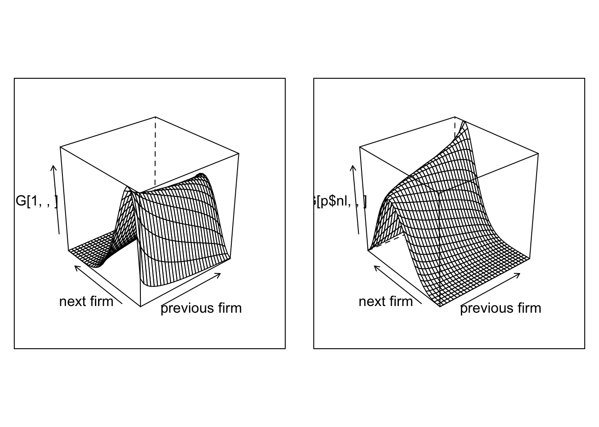
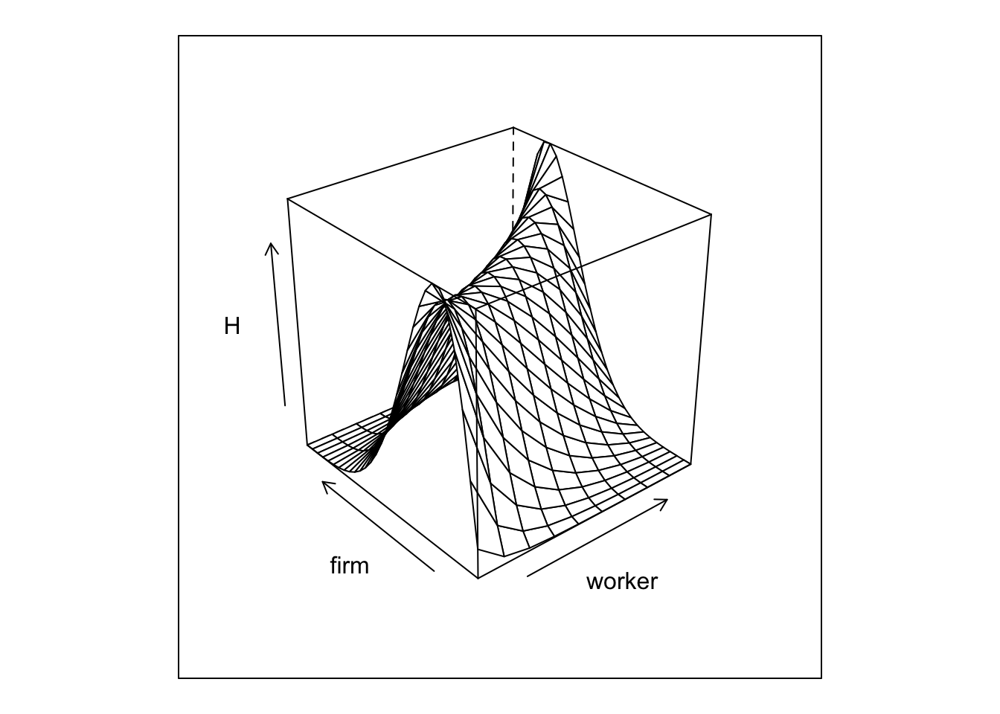
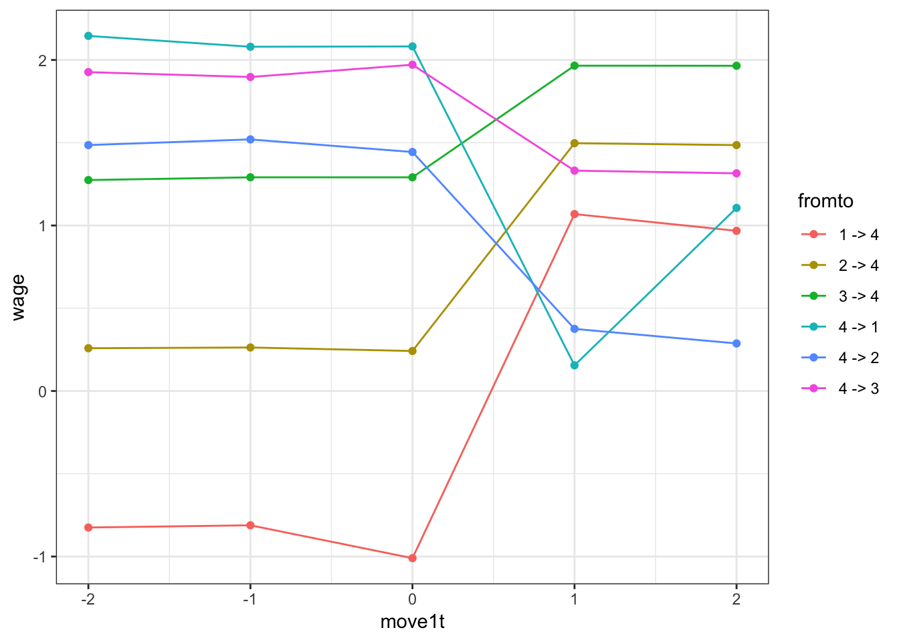
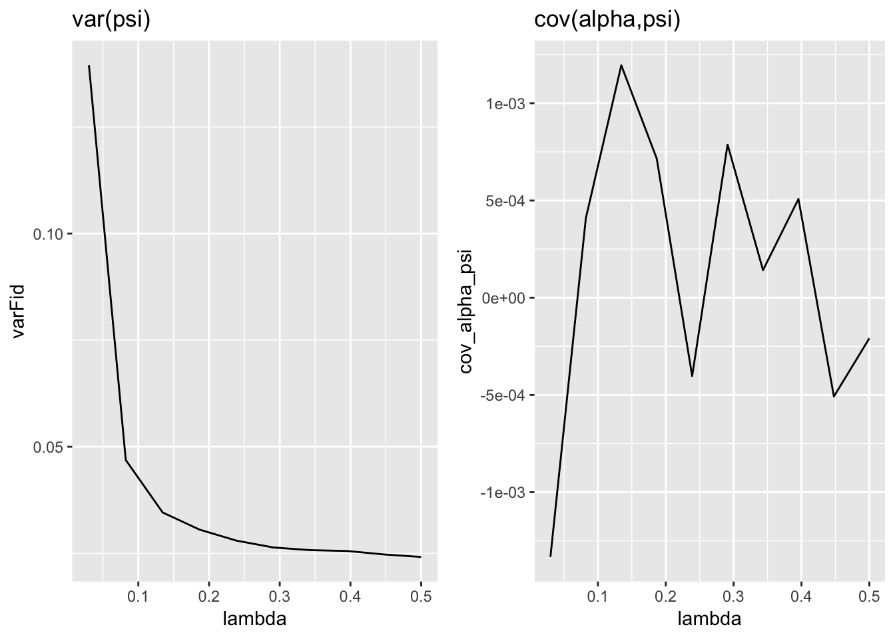

The goal of the following homework is to develop our understanding of the two-way fixed effect models. See the original paper by Abowd Kramartz and Margolis.
library(data.table)
library(reshape)
library(lattice)
library(gridExtra)
library(mvtnorm)
library(ggplot2)
library(futile.logger)One central piece is to have a network of workers and firms over time. We then start by simulating such an object. The rest of homework will focus on adding wages to this model. As we know from the lectures, a central issue of the network will be the number of movers.
We are going to model the mobility between workers and firms. Given a transition matrix we can solve for a stationary distrubtion, and then construct our panel from there.
p <- list()
p$nk = 30 # firm types
p$nl = 10 # worker types
p$alpha_sd = 1
p$psi_sd = 1
# let's draw some FE
p$psi = with(p,qnorm(1:nk/(nk+1)) * psi_sd)
p$alpha = with(p,qnorm(1:nl/(nl+1)) * alpha_sd)
# let's assume moving PR is fixed
p$lambda = 0.05
p$csort = 0.5 # sorting effect
p$cnetw = 0.2 # network effect
p$csig = 0.5 #
# lets create type specific transition matrices
# we are going to use joint normal centered on different values
# G[i,j,k] = Pr[worker i, at firm j, moves to firm k]
getG <- function(p){
G = with(p,array(0,c(nl,nk,nk)))
for (l in 1:p$nl) for (k in 1:p$nk) {
# prob of moving is highest if dnorm(0)
G[l,k,] = with(p,dnorm( psi - cnetw *psi[k] - csort * alpha[l],sd = csig ))
# normalize to get transition matrix
G[l,k,] = G[l,k,]/sum(G[l,k,])
}
return(G)
}
G <- getG(p)
getH <- function(p,G){
# we then solve for the stationary distribution over psis for each alpha value
H = with(p,array(1/nk,c(nl,nk)))
for (l in 1:p$nl) {
M = G[l,,]
for (i in 1:100) {
H[l,] = t(G[l,,]) %*% H[l,]
}
}
return(H)
}
H = getH(p,G)
Plot1=wireframe(G[1,,],aspect = c(1,1),xlab = "previous firm",ylab="next firm")
Plot2=wireframe(G[p$nl,,],aspect = c(1,1),xlab = "previous firm",ylab="next firm")
grid.arrange(Plot1, Plot2,nrow=1)
And we can plot the joint distribution of matches

The next step is to simulate our network given our transitions rules.
p$nt = 5
p$ni = 130000
sim <- function(p,G,H){
set.seed(1)
# we simulate a panel
network = array(0,c(p$ni,p$nt))
spellcount = array(0,c(p$ni,p$nt))
A = rep(0,p$ni)
for (i in 1:p$ni) {
# we draw the worker type
l = sample.int(p$nl,1)
A[i]=l
# at time 1, we draw from H
network[i,1] = sample.int(p$nk,1,prob = H[l,])
for (t in 2:p$nt) {
if (runif(1)<p$lambda) {
network[i,t] = sample.int(p$nk,1,prob = G[l,network[i,t-1],])
spellcount[i,t] = spellcount[i,t-1] +1
} else {
network[i,t] = network[i,t-1]
spellcount[i,t] = spellcount[i,t-1]
}
}
}
data = data.table(melt(network,c('i','t')))
data2 = data.table(melt(spellcount,c('i','t')))
setnames(data,"value","k")
data[,spell := data2$value]
data[,l := A[i],i]
data[,alpha := p$alpha[l],l]
data[,psi := p$psi[k],k]
}
data <- sim(p,G,H)The final step is a to assign identities to the firm. We are going to do this is a relatively simple way, by simply randomly assigning firm ids to spells.
addSpells <- function(p,dat){
firm_size = 10
f_class_count = p$ni/(firm_size*p$nk*p$nt)
dspell <- dat[,list(len=.N),list(i,spell,k)]
dspell[,fid := sample( 1: pmax(1,sum(len)/f_class_count ) ,.N,replace=TRUE) , k]
dspell[,fid := .GRP, list(k,fid)]
setkey(dat,i,spell)
setkey(dspell,i,spell)
dat[, fid:= dspell[dat,fid]]
}
addSpells(p,data) # adds by reference to the same data.table object (no copy needed)Question 1 We are going to do some R-golfing (see wikipedia). I want you to use a one line code to evaluate the following 2 quantities:
## [1] 17.36807## [1] 28## [1] 3.468003## [1] 62To evaluate the number of strokes that you needed to use run the following on your line of code: nchar("YOUR_CODE_IN_QUOTES_LIKE_THIS"). My scores for the previous two are 28 and 62.
We start with just AKM wages, which is log additive with some noise.
p$w_sigma = 0.8
addWage <- function(p,data){
data[, lw := alpha + psi + p$w_sigma * rnorm(.N) ]
}
addWage(p,data)Question 2 Before we finish with the simulation code, use this generated data to create the event study plot from Card-Heining-Kline:

Question 3 Pick the parameters psi_sd,alpha_sd,csort, csig and w_sigma to roughly match the decomposition in equation (6) of Card-Heining-Kline (note that they often report numbers in standard deviations, not in variances). psi_sd, alpha_sd, w_sigma can be directly calibrated from CHK. On the other hand, csort and csig needs to be calibrated to match the numbers in CHK after AKM estimation. If AKM estimation on psi and alpha is too slow, use the true psi and alpha and get residuals directly. For this last part, however, we first need to confront the question of how to actually estimate this AKM model!
This requires to first extract a large connected set, and then to estimate the linear problem with many dummies.
Because we are not going to deal with extremely large data-sets, we can use off the shelf algorithms to extract the connected set. There are two approaches:
conComp from the package ggm to extract the connected set from our data. To do so you will need to construct first an adjacency matrix between the firms. An adjacency matrix is a (number of fid,number of fid) square matrix. Element \((i,j)=1\) if a worker ever moved from \(i\) to \(j\), else \((i,j)=0\). Here is how I would proceed to construct the adjacency matrix:
data[ ,fid.l1 := data[J(i,t-1),fid]], for which you need to first run setkey(data,i,t)jdata = data[fid.l1!=fid] and only keep unique pairsvalue:=1 and cast this new data to an array using the acast command with fill=0compfactor from package lfe. I prefer this approach because much faster.Question 4 Use the previous procedure, extract the connected set, drop firms not in the set (I expect that all firms will be in the set).
adjMat <- function(data){
setkey(data,i,t)
data[ ,fid.l1 := data[J(i,t-1),fid]]
data <- data[complete.cases(data)]
nfirms = data[,max(fid)]
jdata = data[fid.l1!=fid][,list(fid,fid.l1)]
jdata = unique(jdata)
setkey(jdata,fid,fid.l1)
# jdata holds the indices where a sparse matrix should be 1.
amat = Matrix::sparseMatrix(i=jdata[,c(fid,fid.l1)],j=jdata[,c(fid.l1,fid)],dims=c(nfirms,nfirms))
amat
}
# amat = adjMat(data)
# g = graph.adjacency(as.matrix(amat)) # says it supports Matrix::sparsematrix, but doesn't...
# # plot(g) # takes forever, shows unconnected firms
# clu = components(g)
# connected = groups(clu)
# # keep all in largest connected set
# keep = connected$`1`
# data = data[fid %in% keep]
# or, using lfe
concomp <- function(data){
setkey(data,i,t)
data[ ,fid.l1 := data[J(i,t-1),fid]]
data <- data[complete.cases(data)]
cf = lfe::compfactor(list(f1=data[,factor(fid)],f2=data[,factor(fid.l1)]))
fr = data.frame(f1=data[,factor(fid)],f2=data[,factor(fid.l1)],cf)
data = data[fr$cf==1]
return(data)
}
data <- concomp(data)Estimating this model is non-trivial. Traditional approaches like a within-transformation is not sufficient here, as we have two fixed effects to estimate. Guimareas and Portugal propose a ZigZag estimator in the Stata Journal. Simen Gaure proposes an almost equivalent approach and develops the lfe package for R. The idea in both approaches starts with the formulation
\[ \mathbf{Y} = \mathbf{Z}\beta + \mathbf{D}\alpha + \epsilon \]
where \(\mathbf{Z}\) is \((N,k)\), and \(\mathbf{D}\) is a \((N,G_1)\) matrix of dummy variables: element \((i,j)\) of \(\mathbf{D}\) is \(1\) if \(i\) is associated to \(j\).
Both papers show the recursive relationship
\[ \left[ \begin{array}{c} \beta &=& (\mathbf{Z}'\mathbf{Z})^{-1} \mathbf{Z}'(\mathbf{Y}-\mathbf{D}\alpha) \\ \alpha &=& (\mathbf{D}'\mathbf{D})^{-1} \mathbf{D}'(\mathbf{Y}-\mathbf{Z}\beta) \end{array} \right] \]
data[,mean(resid(lm(y ~ z))),by=i]\[ \mathbf{Y} = \mathbf{Z}\beta + \mathbf{D}_1\alpha + \mathbf{D}_2\gamma + \epsilon \]
and recursive structure:
\[ \left[ \begin{array}{c} \beta &=& (\mathbf{Z}'\mathbf{Z})^{-1} \mathbf{Z}'(\mathbf{Y}-\mathbf{D}_1\alpha-\mathbf{D}_2\gamma) \\ \alpha &=& (\mathbf{D}_1'\mathbf{D}_1)^{-1} \mathbf{D}_1'(\mathbf{Y}-\mathbf{Z}\beta-\mathbf{D}_2\gamma) \\ \gamma &=& (\mathbf{D}_2'\mathbf{D}_2)^{-1} \mathbf{D}_2'(\mathbf{Y}-\mathbf{Z}\beta-\mathbf{D}_1\alpha) \end{array} \right] \]
mod = data[,lm(y ~ z + D1 + D2)]data[,mean(resid(mod) + coef(mod)[3]*D2),by=i]data[,mean(resid(mod) + coef(mod)[2]*D1),by=j]Guimaraes+Portugal do this in an iterative fashion until the difference in mean squared error (MSE) of successive estimates of line 0 becomes small.
Question 5 Write a function guimaraesPortugal that takes data and tol as an input and does the following steps:
alpha_hat=0 and psi_hat=0delta=Infwhile delta>tol do
lw on psi_hat and alpha_hatcoef
coef[2:3] <- 0MSE for movers onlyalpha_hat as mean of res + coefs[3]*alpha_hat by i, as abovepsi_hatdata.table and check that the linear regression lm(lw ~ alpha_hat + psi_hat) has coefficients 1.00000 for both FEs.## INFO [2018-11-08 10:00:07] iter=1, MSE=0.214216, delta(MSE)=Inf
## INFO [2018-11-08 10:00:14] iter=10, MSE=0.097778, delta(MSE)=0.000759
## INFO [2018-11-08 10:00:21] iter=20, MSE=0.093468, delta(MSE)=0.000246
## INFO [2018-11-08 10:00:29] iter=30, MSE=0.091924, delta(MSE)=0.000116
## INFO [2018-11-08 10:00:36] iter=40, MSE=0.091147, delta(MSE)=0.000067
## INFO [2018-11-08 10:00:43] iter=50, MSE=0.090681, delta(MSE)=0.000044
## INFO [2018-11-08 10:00:50] iter=60, MSE=0.090371, delta(MSE)=0.000030
## INFO [2018-11-08 10:00:57] iter=70, MSE=0.090155, delta(MSE)=0.000022
## INFO [2018-11-08 10:01:03] iter=80, MSE=0.089996, delta(MSE)=0.000016
## INFO [2018-11-08 10:01:11] iter=90, MSE=0.089877, delta(MSE)=0.000013
## INFO [2018-11-08 10:01:20] iter=100, MSE=0.089786, delta(MSE)=0.000010
## INFO [2018-11-08 10:01:27] iter=110, MSE=0.089714, delta(MSE)=0.000008
## INFO [2018-11-08 10:01:34] iter=120, MSE=0.089656, delta(MSE)=0.000006
## INFO [2018-11-08 10:01:41] iter=130, MSE=0.089610, delta(MSE)=0.000005
## INFO [2018-11-08 10:01:49] iter=140, MSE=0.089572, delta(MSE)=0.000004
## INFO [2018-11-08 10:01:57] iter=150, MSE=0.089541, delta(MSE)=0.000004
## INFO [2018-11-08 10:02:05] iter=160, MSE=0.089515, delta(MSE)=0.000003
## INFO [2018-11-08 10:02:12] iter=170, MSE=0.089493, delta(MSE)=0.000003
## INFO [2018-11-08 10:02:19] iter=180, MSE=0.089475, delta(MSE)=0.000002
## INFO [2018-11-08 10:02:26] iter=190, MSE=0.089459, delta(MSE)=0.000002##
## Call:
## lm(formula = lw ~ alpha_hat + psi_hat, data = data)
##
## Residuals:
## Min 1Q Median 3Q Max
## -1.70312 -0.21353 -0.00044 0.21438 1.53969
##
## Coefficients:
## Estimate Std. Error t value Pr(>|t|)
## (Intercept) 0.0002860 0.0004406 0.649 0.516
## alpha_hat 1.0001969 0.0013660 732.223 <2e-16 ***
## psi_hat 1.0004850 0.0019395 515.842 <2e-16 ***
## ---
## Signif. codes: 0 '***' 0.001 '**' 0.01 '*' 0.05 '.' 0.1 ' ' 1
##
## Residual standard error: 0.3175 on 519317 degrees of freedom
## Multiple R-squared: 0.5281, Adjusted R-squared: 0.5281
## F-statistic: 2.905e+05 on 2 and 519317 DF, p-value: < 2.2e-16Note You can increase speed by focusing on movers only first to recover the psi.
Question 5 Now do the same thing but use the function felm from package lfe. Write function gaureAKM which takes data and p as inputs.
## INFO [2018-11-08 10:02:27] running gaureAKM with lambda=0.050000
## INFO [2018-11-08 10:02:41] done.We now have every thing we need to look at the impact of limited mobility bias. Compute the following:
Question 6 Report this in a plot. Fix T and vary lambda. Plot (i) correlation between firm fixed effect and individual fixed effect and (ii) variance of firm fixed effect against the number of movers. This should look like the Andrews et al. plot.
p$nlambda = 10
pdat = data.frame(lambda=seq(from=0.03,0.5,length.out = p$nlambda),varFid = 0, cov_alpha_psi = 0,varFid_true = 0, cov_alpha_psi_true = 0)
for (i in 1:nrow(pdat)){
p$lambda = pdat[i,"lambda"]
flog.info("---> doing for lambda = %f",p$lambda)
data = buildData(p)
data = concomp(data)
g <- gaureAKM(p,data)
pdat[i,"varFid"] <- var(g$psi$effect)
pdat[i,"cov_alpha_psi"] <- g$data[!is.na(psi_hat),cov(psi_hat,alpha_hat)]
pdat[i,"varFid_true"] <- g$data[,var(psi)]
pdat[i,"cov_alpha_psi_true"] <- g$data[,cov(psi,alpha)]
}## INFO [2018-11-08 10:02:41] ---> doing for lambda = 0.030000
## INFO [2018-11-08 10:02:46] running gaureAKM with lambda=0.030000
## INFO [2018-11-08 10:03:24] done.
## INFO [2018-11-08 10:03:24] ---> doing for lambda = 0.082222
## INFO [2018-11-08 10:03:29] running gaureAKM with lambda=0.082222
## INFO [2018-11-08 10:03:37] done.
## INFO [2018-11-08 10:03:37] ---> doing for lambda = 0.134444
## INFO [2018-11-08 10:03:42] running gaureAKM with lambda=0.134444
## INFO [2018-11-08 10:03:47] done.
## INFO [2018-11-08 10:03:47] ---> doing for lambda = 0.186667
## INFO [2018-11-08 10:03:52] running gaureAKM with lambda=0.186667
## INFO [2018-11-08 10:03:56] done.
## INFO [2018-11-08 10:03:56] ---> doing for lambda = 0.238889
## INFO [2018-11-08 10:04:02] running gaureAKM with lambda=0.238889
## INFO [2018-11-08 10:04:06] done.
## INFO [2018-11-08 10:04:06] ---> doing for lambda = 0.291111
## INFO [2018-11-08 10:04:13] running gaureAKM with lambda=0.291111
## INFO [2018-11-08 10:04:17] done.
## INFO [2018-11-08 10:04:17] ---> doing for lambda = 0.343333
## INFO [2018-11-08 10:04:24] running gaureAKM with lambda=0.343333
## INFO [2018-11-08 10:04:27] done.
## INFO [2018-11-08 10:04:27] ---> doing for lambda = 0.395556
## INFO [2018-11-08 10:04:33] running gaureAKM with lambda=0.395556
## INFO [2018-11-08 10:04:36] done.
## INFO [2018-11-08 10:04:37] ---> doing for lambda = 0.447778
## INFO [2018-11-08 10:04:44] running gaureAKM with lambda=0.447778
## INFO [2018-11-08 10:04:47] done.
## INFO [2018-11-08 10:04:47] ---> doing for lambda = 0.500000
## INFO [2018-11-08 10:04:54] running gaureAKM with lambda=0.500000
## INFO [2018-11-08 10:04:57] done.p1=ggplot(data=pdat,mapping=aes(x=lambda,y=varFid)) + geom_line() + ggtitle("var(psi)")
p2=ggplot(data=pdat,mapping=aes(x=lambda,y=cov_alpha_psi)) + geom_line()+ ggtitle("cov(alpha,psi)")
grid.arrange(p1, p2,nrow=1)
Pick a relatively short \(T\) together with a low \(\lambda\). Simulate one data-set. Next conduct the following procedure:
The theta in the bias correction formula is on var(psi), not psi itself.
Question 7 Report the true values, the non biased corrected and the bias corrected.